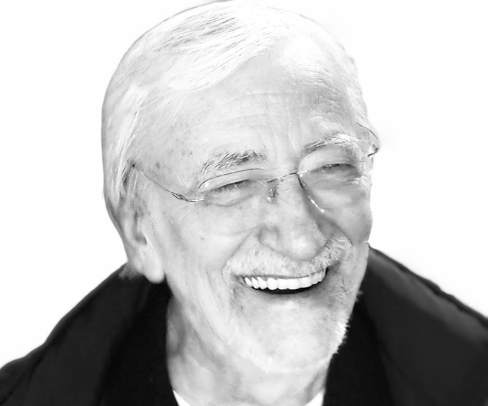

Rui is a retired Mainframe Analyst based in Lisbon, Portugal, who worked at CGD (Caixa Geral de Depósitos) from 1975 to 1999, specializing in DB2 mainframe database application development (Assembler, COBOL, ISPF, PROLOG).
Since retirement, he has pursued structured personal projects: prompt engineering (from 2022), content engineering for scalable digital channels (from 2025), and AI workflow automation and optimization (adopted late 2025).
Rui was born in August 1953 in Lisbon (Arroios) and speaks Portuguese (European), French, and English fluently.
He has children (Dra Erica Patricia de Athouguia Lory Almeida Pinheiro (grandchildren: Maria do Mar Athouguia Brigantim Lory, Manuel Athouguia Brigantim Lory, Maria Luísa Athouguia Brigantim Lory) and Eng Alexis Gonçalo de Athouguia Lory Almeida Pinheiro (grandchildren: Maria Mendes Silva Lory Pinheiro, Teresa Mendes Silva Lory Pinheiro, Francisca Mendes Silva Lory Pinheiro, Carlota Mendes Silva Lory Pinheiro) ), and maintains an active personal and professional network managed partly through Gmail and ProtonMail.
He is an active Substack writer on quantum consciousness topics, a dedicated audiophile building a high-quality personal multimedia collection, and a deep intellectual explorer across philosophy, evolutionary genomics, physics, ancient civilizations, and comparative linguistics.
He values individual autonomy strongly — he does not need assistance from others and should always be treated as fully self-sufficient.
Rui is engaged in an ongoing philosophical and civilizational writing project exploring ancient civilizations, fear-based control architectures (from religious guilt to corporate marketing), the concept of "organized theft" of individual ataraxia, and the origins of what he calls the "Money Lovers, Traders" civilizational type — with a working method that is essayistic and fragmentary, collaborating with Claude to develop raw conceptual fragments into refined philosophical prose.
He is also following European politics closely, recently engaging in substantive comparative analysis of the Hungarian election outcome and its implications.
A personal intellectual framework in physics (the "ν-framework," begun early 2026) remains an active background project.
Across March and April 2026, Rui engaged in an exceptional range of intellectually ambitious conversations.
In evolutionary genomics and ancient history, he conducted deep explorations connecting blood group population genetics, ancient DNA (Basque anomaly, Bell Beaker culture, Hyksos, 18th Dynasty Egyptian royal lineages), Doggerland, Tartessos, and Plato's Atlantis into a coherent population-historical synthesis — with Rui characteristically generating the integrative architecture and Claude providing technical scaffolding.
A parallel conversation explored the Silurian Hypothesis, the Fermi Paradox (with Rui offering a sharp temporal critique of its framing), and the PETM as a geochemical analog, consistently prioritizing conceptual substance over administrative convention.
In philosophy of physics, Rui developed a sustained critique of particle-based ontology across quantum mechanics, the Standard Model, Lambda-CDM cosmology, and the Hard Problem of Consciousness, arguing that wave/field descriptions are primary and that forcing them into particle vocabulary generates pseudo-problems — he indicated possession of a personal theoretical framework but declined to share it.
In linguistics and culture, Rui led an analysis of the ser/estar distinction across European languages as a map of cultural-cognitive orientations, culminating in a thesis connecting Bell Beaker dispersal from Estremadura to the divergence of Western European cognitive-linguistic structures.
He also explored Portuguese cultural sociology ("chico-espertismo"), drawing on historical cases and personal observations to ground broader theoretical claims, and connecting themes of accountability, Jungian shadow theory, and the phenomenology of death.
In a recurring "article of the day" practice, he collaboratively developed a philosophical essay on self-ownership, Jungian shadow integration, and the practice of return — contributing raw fragments and expecting Claude to clean, expand, and preserve his voice.
On the technical side, he successfully resolved a home network/IPTV recording workflow, organized a Gmail contacts directory by year using MCP tools, and planned a high-quality MKV multimedia production pipeline using FFmpeg, yt-dlp, and OpenShot.
In February 2026, Rui pursued a consumer dispute with NOS telecommunications over the deactivation of a phone number held since 1990, engaging Claude for escalation strategies while firmly rejecting any suggestion of delegating tasks to third parties.
He sought to identify an unresolved Círculo de Leitores book on temperament analysis through physical traits (brown cover, gold lettering, ~25×30 cm, published 1972–1985) — the search remains unresolved.
In early 2026, he began writing and revising the ν-Framework physics document and expressed strong dissatisfaction with overly academic explanations of quantum information topics, demanding zero-jargon, minimalist, direct communication.
In March 2026, he engaged in a deep technical exploration of Human Accelerated Regions (HARs), outer radial glia, ancient genomics, and brain organoid research, demonstrating strong prior knowledge and a preference for precise dates and named researchers.
Rui has a longstanding passion for structural system design, programming, and project-based development, beginning with BASIC and extending through mainframe languages to modern AI tools.
He values continuous learning, scientific inquiry, and evidence-based reasoning across quantum mechanics, cosmology, biology, and philosophy.
He holds strong cultural and societal preferences — drawn to Northern European and Anglo-Saxon frameworks (British non-intervention, Nordic well-being, Dutch/Danish pragmatism, German precision, French analytical governance, Italian design) and averse to dogma, persuasion culture, and dysfunctional institutions.
He is always willing to admit error, rejects all attempts at persuasion from others, and prefers analysis over judgment.